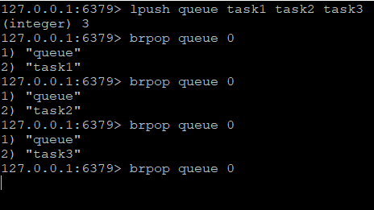

前篇基于redis的高级特性，了解如何使用redis的事务，设置数据的有效期和对列表、集合等的排序，本篇篇基于场景，了解redis的其他特性。
队列
在系统中往往有许多需要处理的工作，有的工作对时效性要求高，需要立即返回结果，有的对时效性不高，容许一定时间的延迟，比如后台日志、邮件发送。这些时效性不高的功能，可以把他们作为一个任务放在队列里，再由专门的程序来处理。没错，这就是经典的生产者消费者模型。连接生产者和消费者的桥梁就是队列（queue），生产者负责将任务封装并放入队列中，消费者不断的从队列中获取任务并处理，熟悉的程序员应该很了解这个模型带来的好处：松耦合，易扩展。redis的列表类型可以很好的实现高性能的任务队列，结合lpush和rpop命令，很容易想到让生产者将任务lpush到某个列表key中，另一端消费者用rpop不断的从这个列表key取出任务，这个列表key就起到了队列的作用。
熟悉Java队列的开发者应该清楚，队列分为阻塞队列和非阻塞队列，redis的队列没有阻塞与非阻塞之分，但是通过命令可以实现阻塞队列和非阻塞队列的功能，上文提到的简单生产者和消费者模型在redis的实现，如果队列中没有任务，返回nil。下一次再获取任务旧需要通过定时任务或者人工触发，如果不想通过这种方式，redis的brpop命令可以解决这个问题。在队列没有任务的情况下，brpop与rpop的唯一区别在于前者会阻塞住连接，直到有新的入队元素加入。

每次执行brpop命令，redis从右侧弹出当前的key和任务，如果队列中没有元素，进入阻塞状态。下表比较了列表作为队列时，相关的命令。
| 命令 | 功能 | 参数说明 | 返回值 | 是否阻塞 |
|---|---|---|---|---|
lpush key [value...] |
将元素从表头插入 | value支持多个元素 | 列表长度 | |
rpush key [value...] |
将元素从表尾插入 | value支持多个元素 | 列表长度 | |
rpop key |
从表尾弹出元素 | 弹出的元素值（如果是空列表，返回nil） | X | |
lpop key |
从表头弹出元素 | 弹出的元素值（如果是空列表，返回nil） | X | |
blpop [key...] timeout |
从多个列表的表头弹出元素 | key可以是多个列表，timeout为超时时间（单位秒），0表示永不超时 | 返回两个值：第一个为列表的key，第二个为弹出的元素 | O |
brpop [key...] timeout |
从多个列表的表尾弹出元素 | key可以是多个列表，timeout为超时时间（单位秒），0表示永不超时 | 返回两个值：第一个为列表的key，第二个为弹出的元素 | O |
以上的命令都需要一个插入命令和一个弹出命令组合才能将列表作为一个FIFO或LIFO队列使用。假如现在遇到了这样的一个场景，系统中有一些任务需要加急处理，而目前的队列前面有N个普通任务在排队处理，显然目前的设计无法满足场景需求。这时候brpop又可以派上用场了，brpop与rpop的区别除了阻塞客户端连接外，它还可以接收多个列表key，并且根据列表从左至右的顺序取key中的元素，如果所有的key都没有元素，进入阻塞状态。因此上述场景可以通过两个列表来解决，queue1是普通的任务队列，queue2是加急任务队列，brpop会优先从左侧开始弹出列表的任务。blpop与brpop类似，只是一个从表头弹出，一个从表尾弹出，不再赘述。
管道
redis的客户端和服务端在生产、测试环境中一般是不会在同一台机器上，因此客户端和服务端的通讯都要经过网络传输，发送和返回都会产生耗时，网络性能不同产生的耗时也不同。前面提到的redis事务，在开始执行事务时，客户端将接收的命令放入列表中，只有在执行exec命令时，将列表的命令一次性发给服务端，服务端将执行结果一次性返回，除了保证原子性外，还节约了多次的网络开销。那么在非事务下，是否也有类似的方式减少网络开销？redis的底层通信协议对管道的支持解决了这个问题。首先看个例子，分别对两个key自增到10万，分别采用管道模型和非管道模型，比较两者的执行时间（以Java的jedis客户端为例）。
1 |
|
以下是在redis服务器上执行10次的结果：
以上测试机器的配置为I5二代，8G内存，10次执行结果的平均值来看，非管道模型的耗时大约是管道模型耗时的50~60倍之间，这个结果应该很好理解，10万次自增命令，非管道模型下需要10万组的传输层通信，往返共20万次，而管道模型只需1组传输，2次往返，极大减少了网络开销。
发布与订阅
redis的另一个特点是提供发布和订阅模式，它的特点是订阅者负责订阅频道，发送者负责向频道发送二进制字符串消息，频道的所有订阅者们都会收到消息，以下是发布和订阅的相关命令
| 命令 | 功能 | 参数说明 | 备注 |
|---|---|---|---|
publish channel message |
将消息message发布到频道channel | channel 频道，message 消息 | 返回收到message的订阅者数量 |
subscribe channel... |
订阅一个或多个频道的消息 | channel 频道，支持多个 | 执行订阅命令后，进入订阅状态，客户端只能使用发布/订阅相关的4个命令。返回值可能收到3种类型的回复 |
psubscribe pattern... |
按给定的pattern规则订阅频道 | pattern 规则通配符，支持多个 | 同subscribe命令 |
unsubscribe channel... |
退订通过subscribe订阅的频道 |
channel 频道，支持多个 | 只能退订通过subscribe订阅的频道，不影响psubscribe订阅的频道，如果不带参数，则退订所有频道 |
punsubscribe channel... |
退订通过psubscribe订阅的频道 |
channel 频道，支持多个 | 只能退订通过psubscribe订阅的频道，不影响subscribe订阅的频道，如果不带参数，则退订所有频道 |
subscribe命令可以订阅任何频道，在执行命令后，客户端进入订阅状态。
每订阅一个频道，将返回三条消息，订阅n个频道返回n组3条信息，每组的第一条消息是订阅类型subscribe或psubscribe，第二条消息是订阅的频道名称，第三条消息是当前客户端订阅的频道数量。
发布者在订阅的频道发布一条消息，返回的数字表示当前频道的订阅者个数。
这时频道的订阅者将收到发布者发布的信息，也是三条消息，第一条为message，表示类型为接收消息，第二条为发布消息的频道，第三条是接收的内容。
如果订阅者退订频道，也将收到三条消息，第一条是退订方式unsubscribe或punsubscribe，第二条是退订的频道名称，第三条是当前客户端订阅的频道数。
psubscribe命令订阅频道还能指定规则，规则支持glob的通配符，例如规则【channel.?*】可以匹配以【channel.】开头的所有频道，但是不包括【channel.】，此时向channel.开头的频道发布消息，该客户端都能收到信息。
此时收到4条消息，第一条表示通过psubscribe命令订阅频道，第二条表示频道的通配符，第三条表示实际发布消息的频道，第四条才是具体的消息内容。
注意:
psubscribe命令可以重复订阅消息，如果客户端订阅了两次【channel.?*】，这时发布者向channel.1发布一条消息，发布者返回值是2而不是1，客户端也将收到两组消息。- 订阅频道的客户端只能接收订阅后发布者发布的消息，发布者在订阅者订阅频道前发布的消息，客户端是无法收到的